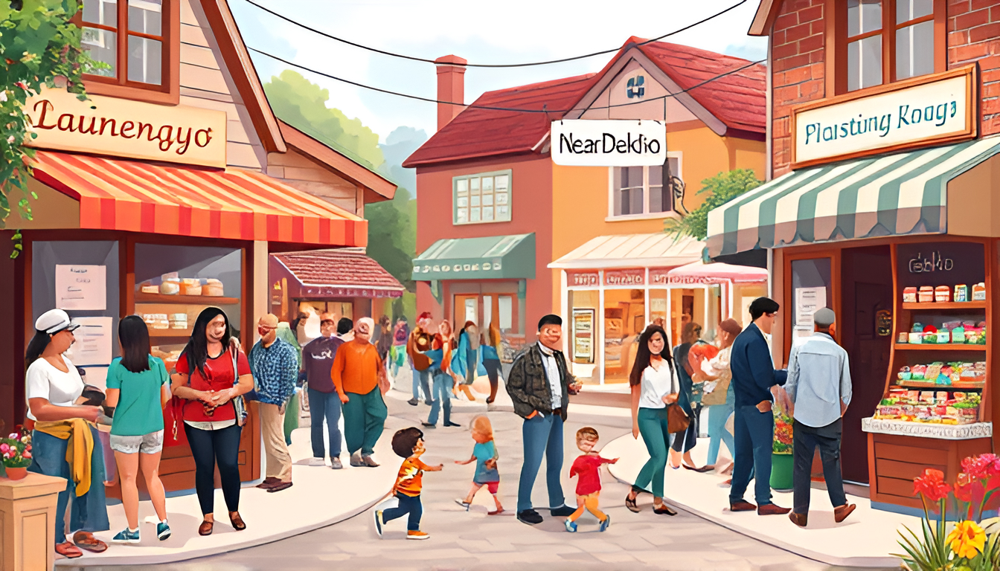
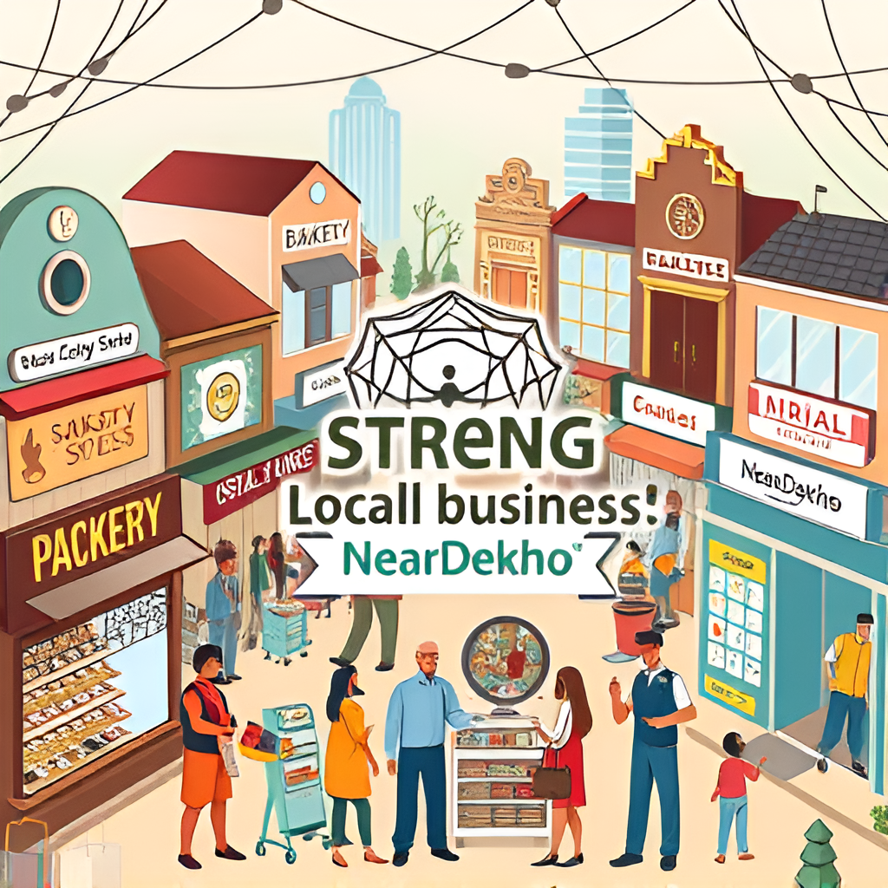
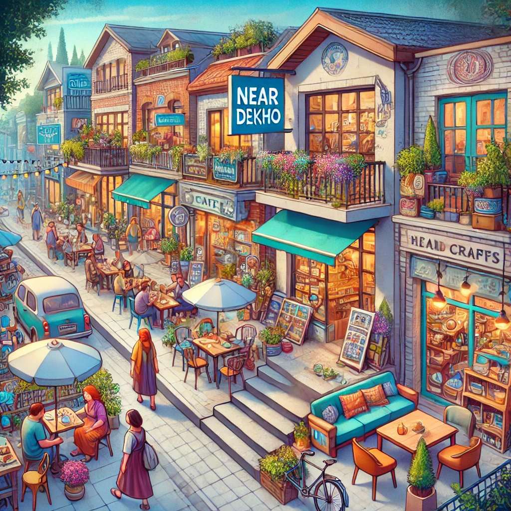
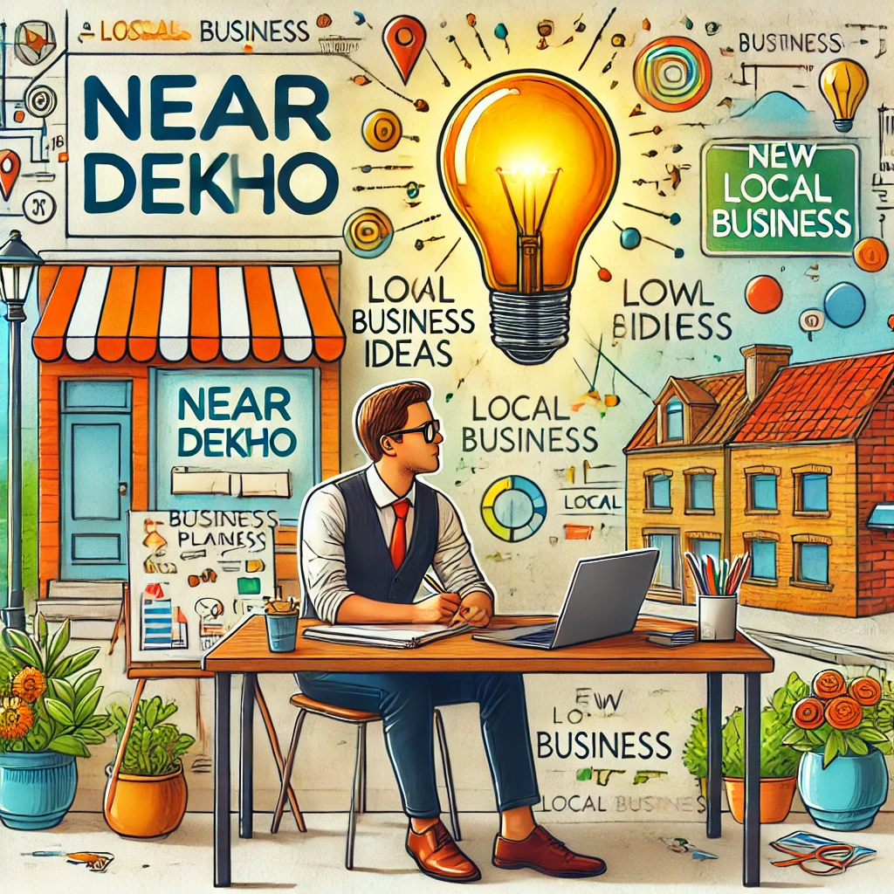
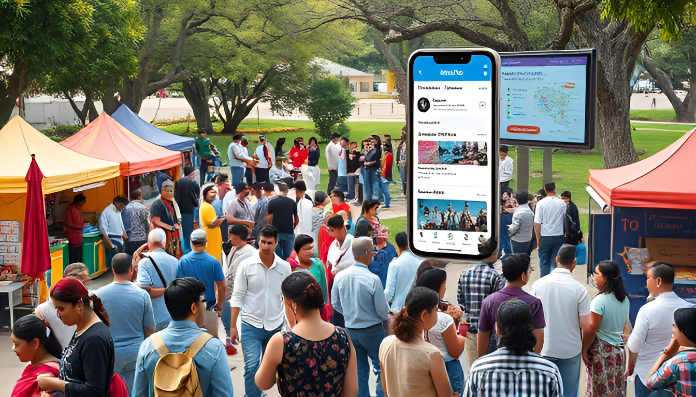
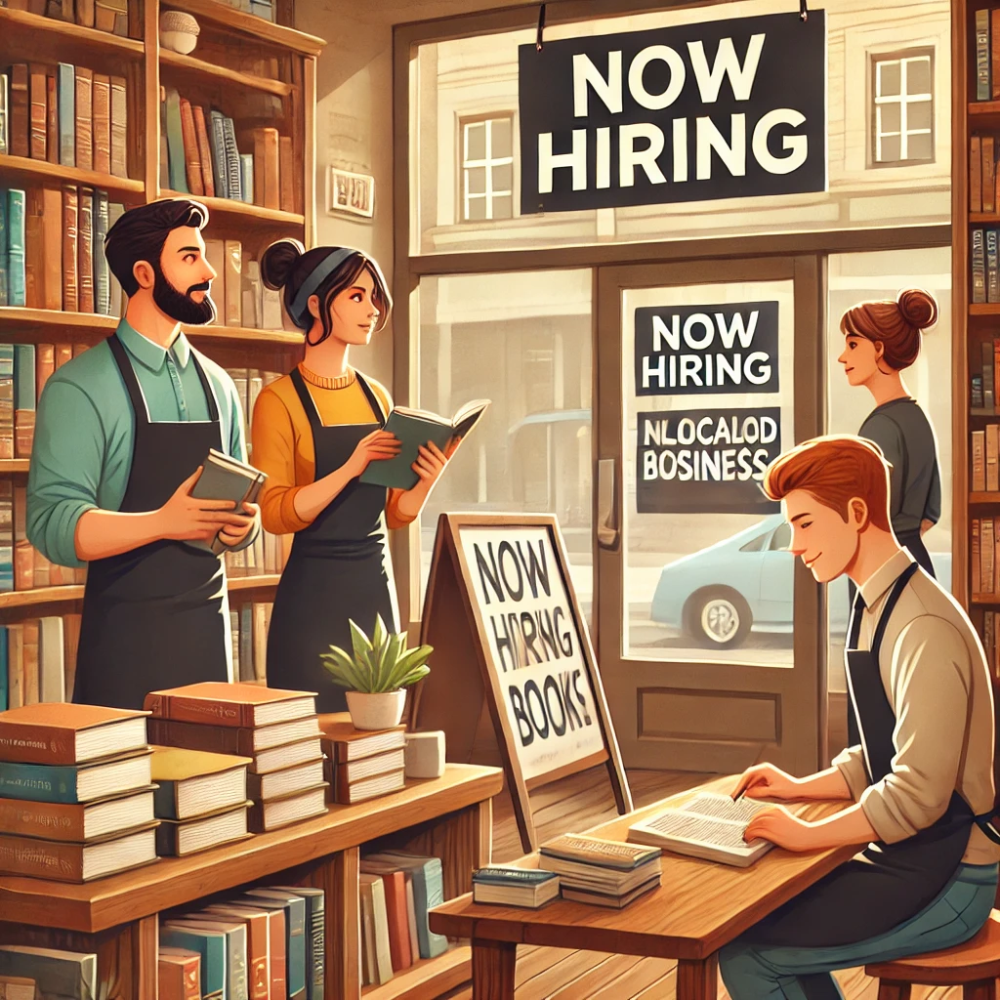

Beyond Business: How Near Dekho is Changing Our Neighbourhoods
Near Dekho is doing way more than just helping us find local shops. It's actually changing how our neighborhoods work. Here's how:
1. Bringing Neighbours Together
Remember when everyone knew the local shopkeepers? Near Dekho is bringing that back. It's not just about buying stuff anymore. It's like turning our neighborhoods into small towns again, where everyone knows each other.
2. Making Our Local Economy Stronger
Think of our local economy like a safety net. The more local businesses we have, the stronger that net is. Near Dekho is helping small businesses compete with the big guys. When these small businesses do well, our whole neighbourhood does better. It's like we're all in this together.
3. Keeping Things Unique
Every neighborhood has its own vibe, right? That comes from all the little local shops and restaurants. Near Dekho is helping these places stay in business. So instead of every street looking the same with big chain stores, we get to keep all the quirky, unique places that make our neighborhood special.
4. Giving New Ideas a Chance
Got a great idea for a business but don't know how to get started? Near Dekho makes it easier. It doesn't cost much to get your business on there, and you can reach people right in your area. It's like giving everyone a chance to be their own boss.
5. Getting People Involved
When you know what's going on in your neighbourhood, you're more likely to care about it, right? Near Dekho keeps everyone in the loop about local news and events. This means more people show up to community meetings or local festivals. It's like we're all more connected to where we live.
6. Creating New Jobs
More businesses means more jobs. Near Dekho is helping local shops and new businesses get off the ground, which creates jobs for all of us. It's like building a big family of local workers who know each other and support one another.